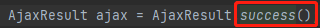
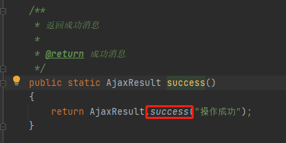
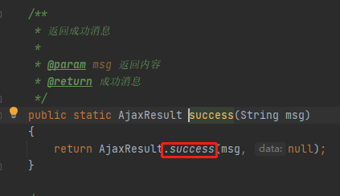
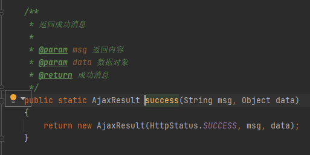
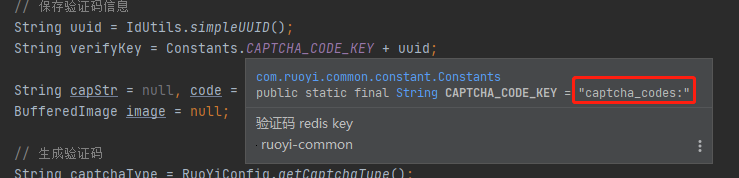

1.3.1.2 查看Java代码
找到后端代码
- 后端一共6个模块 其中
ruoyi-admin是主要模块 也就是我们启动的模块
- 现在对于后端的代码还是不了解的，我们使用IDEA的工具搜索
- 搜索接口名称
captchaImage- 在包名
ruoyi-admin上右击 选择在文件中查找
- 输入接口名
captchaImage - 发现在
CaptchaController的44行 - 双击定位到代码位置

- 在包名
- 后端一共6个模块 其中
打断点验证


分析后端代码
大类前面没有接口注解 保证访问的是我们需要的接口

创建
AjaxResult类1
AjaxResult ajax = AjaxResult.success();
一层一层点下去




判断验证是否开启
1
2
3
4
5
6boolean captchaOnOff = configService.selectCaptchaOnOff();
ajax.put("captchaOnOff", captchaOnOff);
if (!captchaOnOff)
{
return ajax;
}如果没有开启 直接return结束
保存验证码
1
2
3
4
5
6// 保存验证码信息
String uuid = IdUtils.simpleUUID();
String verifyKey = Constants.CAPTCHA_CODE_KEY + uuid;
String capStr = null, code = null;
BufferedImage image = null;
生成UUID，将CAPTCHA_CODE_KEY与UUID拼成新字符串作为Redis的key

1
redisCache.setCacheObject(verifyKey, code, Constants.CAPTCHA_EXPIRATION, TimeUnit.MINUTES);
verifyKeycaptcha_codes： + 生成的UUIDcode刚才那道算术题的答案Constants.CAPTCHA_EXPIRATION值为2 就是有效期2分钟
将验证码保存为图片
1
2
3
4
5
6
7
8
9
10// 转换流信息写出
FastByteArrayOutputStream os = new FastByteArrayOutputStream();
try
{
ImageIO.write(image, "jpg", os);
}
catch (IOException e)
{
return AjaxResult.error(e.getMessage());
}转换成jpg格式的图片
传给前端
1
2
3ajax.put("uuid", uuid);
ajax.put("img", Base64.encode(os.toByteArray()));
return ajax;将UUID也就是key值和生成的图片传给前端
1.3.1.3 综合
1 | getCode() { |
- 访问
captchaImage接口 判 - 断返回的
captchaOnOff是否为空 如果为空赋值为true，如果不为空赋值后端返回的值 - 如果
this.captchaOnOff为真执行后续操作 - 后端返回的图片赋值给
this.codeUrl - 后端返回的UUID赋值给
this.loginForm.uuid